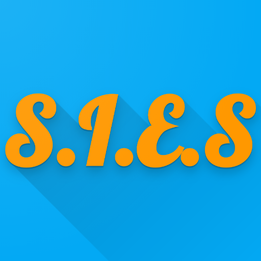

S.I.E.S
Digital Library

S.I.E.S Digital Library app is the official app of S.I.E.S College of Art's, Commerce & Science - Nerul, launched in 2019, developed by Nadeem Akhtar Shaikh (Ty BSc CS 2019).
Download app!